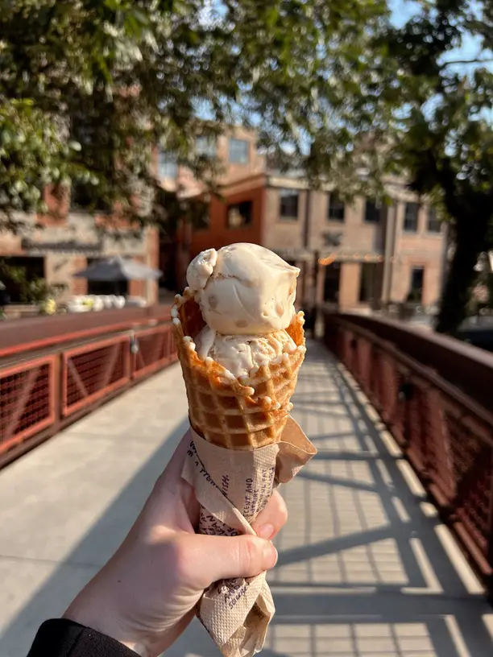
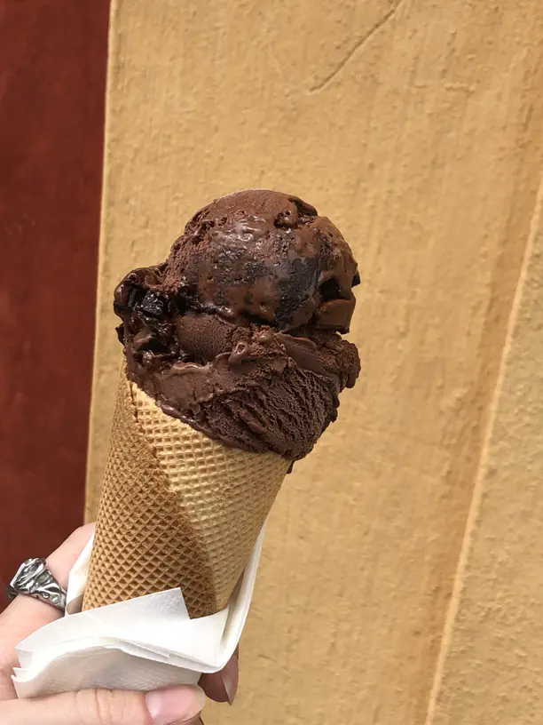

Lore
During the Revolutionary times, when ice cream was only seen as a European luxury, Americans simplified the process by skipping the custard base. This led to the creation of a lighter version known as "Philadelphia ice cream," which remains popular today.

Traditional ice cream, often called "French-style," is made with a custard base that includes egg yolks, giving it a thicker, richer consistency. In contrast, Philadelphia-style ice cream is made without eggs—just cream, sugar, and flavorings—resulting in a much lighter product. In the U.S., most ice creams still use a mix of eggs, sugar, cream, and milk (with at least 10% milk fat to meet legal standards). Compared to French-style and Italian gelato, which are denser due to less air incorporation, Philly-style ice cream has a lighter, more delicate texture thanks to its simpler, airier recipe.
Philly-style (or American/New York-style) ice cream is best for subtle flavors like fruit or high-quality vanilla, as its lighter base doesn’t overpower them.
